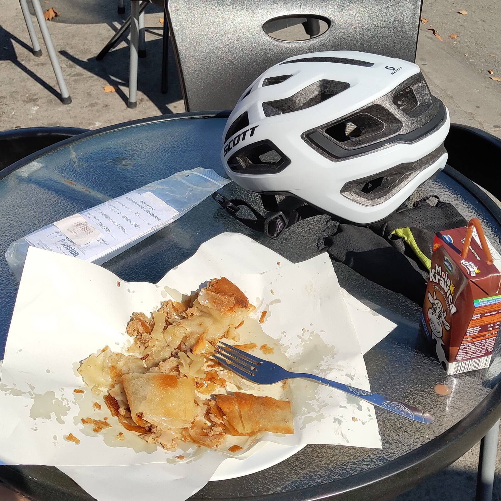
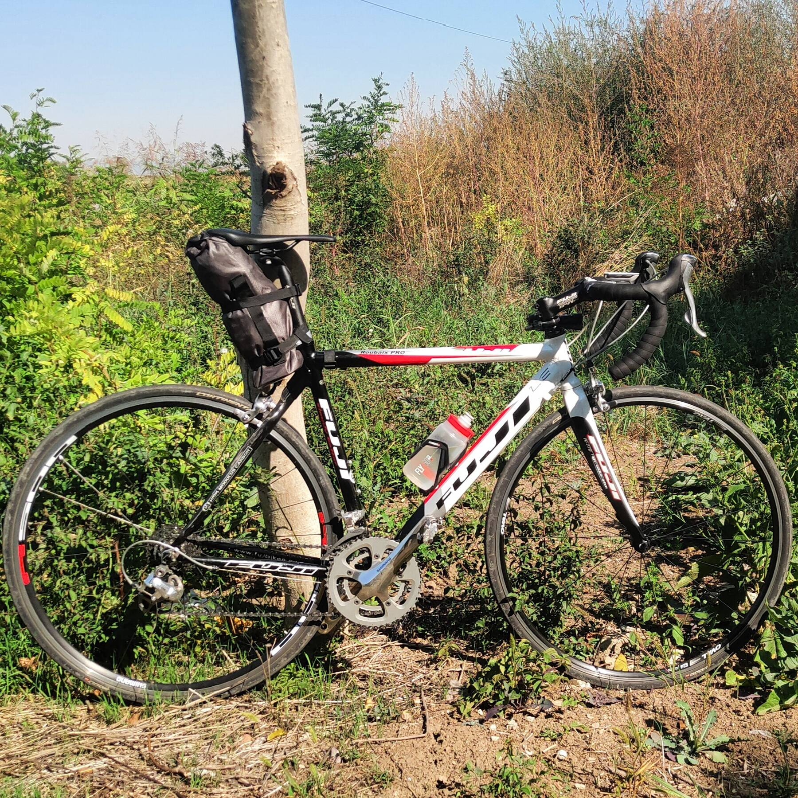

Третьего октября отлично покатался: проехал второй в жизни официальный бревет: «200км Срема». Сремом называют область в Сербии и Хорватии, ограниченную с севера Дунаем, а с юга Савой. В целом регион равнинный, но на севере лежит моя излюбленная гора Фрушка, которую маршрут бревета пересекал трижды.
Бревет был организован в классическом ключе, с КП в деревенских лавках. Прямо старый добрый питерский стайл, с печатями на заправках и «изюминками» в виде непроезжаемых на шоссейнике участков, но об этом позже.
Судя по разговорам на старте, собралась довольно бодрая команда то ли бывших, то ли настоящих спортсменов. Седые деды. Хороший спорт! Поболтали, похвалились, да и поехали потихоньку. Слегка мерзляво, на улице около +12, еду в ноговах с виндблоком и в непродуваемой ветровке. Собратья по колесу все в короткой форме. А мне колени ещё дороги…
После тренировок на Мишелуке и Нишского бревета я стал ощутимо выносливее на подъёмах, и впервые с марта заехал на Иришки венац без остановок. Средняя аж 11.3км/ч! А это, всё же, 4.3км набора с градиентом 8%. Серьёзный прогресс, как по мне.
Очень хотелось раздеться сразу после перевала. Но это самоубийство: впереди шикарный спуск до Ирига и ещё один к Дунаю. Всё правильно сделал, разделся только на втором КП, в Черевиче, после всех мегаспусков.
После Ирига почти сразу начался подъём на Фрушку от Врдника. Очень красивая местность: пологие холмы, чуть тронутые осенью. Надо будет обязательно сюда попозже закатить! Подъём оказался злобнейшим: едешь 8%, потом 9%, потом оказывается, что ты уже карабкаешься в 12%, поворот за поворотом набирая высоту. После уклона в 12% восьмипроцентный градиент кажется детской игрушкой: ну вот, типа, можно отдохнуть наконец, расслабиться. Накатил одного из дедушек, рядом с ним ехал его приятель и пел песню! Вот они, спортсмены. Odakle imaš snagu da pevaš, bre! Перекинулись парой слов, дед сообщил, что это первая часть подъёма, 2.5км, не шибко сложная, вот вторая будет ого-го. Ну ок, ладно, едем — всё, что есть, всё наше…
Вторая часть подъёма оказалась и правда жёсткой. Меньше 10%, по-моему, не было вовсе, а вот 12-13% было много. Всего участок 2.2км. Как я доехал — не знаю, но тоже без остановок. Из принципа. Пульс в районе 170, дышишь как загнанная лошадь, передача 34/28, а за тобой мерно, медленно, спокойно и протяжно выдыхает дед на 34/25. Марко Пантани какой-то, честное слово. Пара ребят на MTB ваще не напрягаясь закатили подъём, правда, сииильно медленнее. Обгонял их как стоячих при своей скорости 8-9км/ч. Невелика мне честь, но это доказывает, что на шоссе 34/28 не в Альпах должно хватать всем.
Спуск к Дунаю, в Раковац, прекрасен. Я однажды пробовал в него забираться, но не осилил. Градиент уж больно жёсткий, это же подтвердили и коллеги-марафонцы: мол, подъём от Раковца — самое злое, что есть на Фрушке. Ok, challenge accepted, попозже поборемся.
Дальше путь шёл по уже езженной неоднократно и искренне любимой дороге вдоль Дуная. Беочин, Черевич, Баноштор. Холмисто; однако после фрушкиных тягунов подъёмы длиной в несколько сот метров не воспринимаются как что-то сложное. Торчки! В некоторые можно и стоя взлететь.
Некоторое время проехался с парой из Шумадии, поболтали немного. Девушка живёт в Обреновце; к югу от него начинаются хорошие такие холмы, я там жил. Правда, ещё без велосипеда.
Незаметно доехали до начала третьего подъёма на Фрушку, через Лежимир. Подъём простой, без 12% финтов. «Крути да гляди», как сказал один попутчик. Но всё равно усталость взяла своё и после спуска к Сремской Митровице крутилось уже не так бодро, как в начале маршрута.
На втором КП подслушал, что в Митровице «самый лучший бурек» подают на автовокзале. :) Ок, на обед закатил именно туда. Бурек действительно оказался замечательным, нежирным и с кучей мяса.

В долине Савы рельефа нет, равнина до самого Дуная. Казалось бы — кати себе и кати. Но ветер. Осенью в Сербии дует мощнейший ветрище, которому даже дали своё имя: Кошава. Вот с ним и пришлось бороться добрых 50 километров: дуло чётко в морду.
Демотивирует и расстраивает довольно сильно. Вроде крутишь-крутишь, а скорости нет. Очень важен в таких случаях правильный психологический настрой. Это вообще, пожалуй, главное качество марафонца. Мы же не паримся, что едем в гору свои черепашьи 12км/ч, верно? Вот тут та же гора, просто сопротивление вместо гравитационного стало аэродинамическим.
Догнал чела, с которым познакомились ещё на нишском марафоне, попробовали ехать вместе. Порассекал для него воздух, разогнались до 25км/ч. Нас опередила двоица быстрых парней, идущих где-то в районе 30, попробовали сесть к ним на хвост, но через пару километров отвалились. Слишком быстро.
Мимо пролетел ещё один паровоз, с теми самыми дедами, которые в начале бревета, похоже, только разогревались. :) Нормальная такая пачка, плотная, шли хорошо за 30. Даже не стал делать попытку заскочить в вагон, сил не было совершенно. Ещё одна группа пролетела мимо, к которой даже можно было бы присоединиться, но у меня заканчивалась вода. Отпустил их и остановился у магазина.
Маленькая девочка спросила: «дядя, а ты гонщик?» Ага, говорю. «У тебя красивые перчатки. А ты победил?» Пока не знаю, говорю, я в процессе. :)
Все пелетоны уехали, судя по всему, я стал последним. 200км можно превратить в спортивное мероприятие, в гонку, с групповой ездой и прочими немарафонскими радостями. А и плевать, подумал я, allure libre. Доеду в любом случае. Скорость низкая, зато своя. Ничего не болит, на том и спасибо. Немного поболтал с женой в телеге и спокойно попилил вперёд.
Ехал, кстати, в таком сетапе: практически ничего спереди, небольшая сумка под седлом. Там ей явно лучше, чем на руле. На прошлом марафоне не понравилось, что сумка отбирает верхний хват, портит развесовку, да и толку от неё там ноль. Всё равно на ходу ничего не достанешь. Так куда лучше: доставать что-то на остановках удобней, руль используется весь.

На третьем КП догнал небольшую группку. Они обошли меня во время санитарной остановки, ехали, вроде, в подходящем темпе. Предложили присоединиться. Ну клёво, попробуем! :) Бороться с ветром в группе намного легче. А после поворота в Сланкамене ветер подул в спину, стало ненапряжно держать скорость в районе 35-38, и поехалось вообще хорошо. Так вместе мы и дошли до финиша. 11 часов 5 минут на всё.
Один из чуваков в группке внезапно оказался полиграфистом — своя типография в Белграде, офсет. Очень приятно поболтали про наше, девочковое: Prinect, автоматизацию допечатки, автоматическую настройку краскозон, вот это всё. За разговором и путь короче показался. Забавно, что я искал людей в Белграде, которым было бы нужно это всё, в 2015-м, сразу после переезда. Не нашёл (плохо искал). А тут вот, пожалуйста: правда, мне уже не надо, допечатка больше не интересна… Велосипед, всё-таки, удивительно демократичная штука.